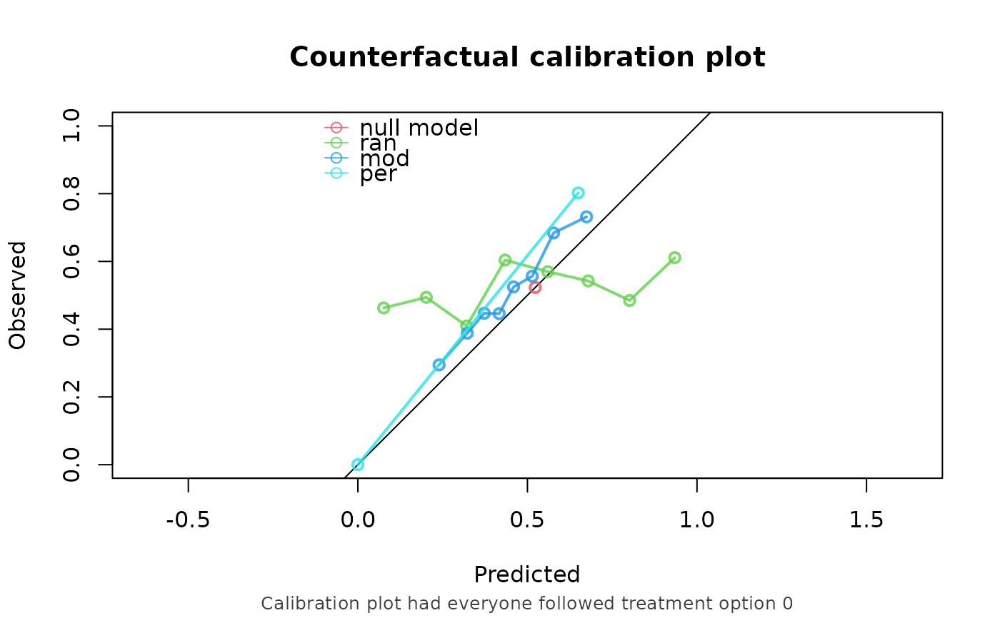

Estimates the predictive performance of predictions under interventions, by forming a weighted pseudopopulation in which every subject was assigned the treatment of interest.
Usage
ip_score(
object,
data,
outcome,
treatment_formula,
treatment_of_interest,
metrics = c("auc", "brier", "oeratio", "calplot"),
time_horizon,
cens_model = "KM",
cens_formula = ~1,
null_model = TRUE,
stable_iptw = FALSE,
bootstrap = 0,
bootstrap_progress = TRUE,
iptw,
ipcw,
quiet = FALSE
)Arguments
- object
One of the following three options to be validated:
a numeric vector, corresponding to risk predictions under intervention of interest.
a glm or coxph model, capable of estimating risks under intervention of interest. See details.
a (named) list, with one or more of the previous 2 options, for validating and comparing multiple models at once.
- data
A data.frame containing the observed outcome, assigned treatment, and necessary confounders for the validation of object.
- outcome
The outcome, to be evaluated within data. This could either be the name of a numeric/logical column in data, or a Surv object for time-to-event data, e.g. Surv(time, status), if time and status are columns in data.
- treatment_formula
A formula which identifies the treatment (left hand side) and the confounders (right hand side) in the data. E.g. A ~ L. The confounders are used to estimate the inverse probability of treatment weights (IPTW) model. The IPTW can also be specified themselves using the iptw argument, in which case the right hand side of this formula is ignored.
- treatment_of_interest
A treatment level for which the counterfactual perormance measures should be evaluated.
- metrics
A character vector specifying which performance metrics to be computed. Options are c("auc", "brier", "oeratio", "calplot"). See details.
- time_horizon
For time to event data, the prediction horizon of interest.
- cens_model
Model for estimating inverse probability of censored weights (IPCW). Methods currently implemented are Kaplan-Meier ("KM") or Cox ("cox"), both applied to the censored times. KM is only supported when the right hand side of cens_formula is 1.
- cens_formula
Formula for which the r.h.s. determines the censoring probabilities. I.e. ~ x1 + x2.
- null_model
If TRUE fit a risk prediction model which ignores the covariates and predicts the same value for all subjects. The model is fitted using the data in which all subjects are counterfactually assigned the treatment of interest (using the IPTW, as estimated using the treatment_formula or as given by the iptw argument). For time-to-event outcomes, the subjects are also counterfactually uncensored (using the IPCW, as estimated using the cens_formula, or as given by the ipcw argument).
- stable_iptw
if TRUE, estimate stabilized IPT-weights. See details.
- bootstrap
If this is an integer greater than 0, this indicates the number of bootstrap iterations, to compute 95% confidence intervals around the performance metrics.
- bootstrap_progress
if set to TRUE, print a progress bar indicating the progress of bootstrap procedure.
- iptw
A numeric vector, containing the inverse probability of treatment weights. These are normally computed using the treatment_formula, but they can be specified directly via this argument. If specified via this argument, bootstrap is not possible.
- ipcw
A numeric vector, containing the inverse probability of censor weights. These are normally computed using the cens_formula, but they can be specified directly via this argument. If specified via this argument, bootstrap is not possible.
- quiet
If set to TRUE, don't print assumptions.
Value
A list with performance metrics, of class 'ip_score", for which the print and plot methods are implemented.
Details
When supplying a glm or coxph model, the model should be able to estimate risks under the intervention of interest. This could be done in two ways: the model does not have a treatment covariate, and always estimates the risk under intervention of interest. Alternatively, the model has a covariate for treatment. This function then automatically estimates the risk under the treatment of interest for all subjects, even if they were assigned alternative treatment.
All performance metrics are computed on the weighted population in which
every subject was counterfactually assigned treatment of interest. auc
is area under the (ROC) curve. Brier score is defined as 1 / sum(iptw)
sum(predictions_i - outcome_i)^2. Scaled brier score is also available
(metrics = "scaled_brier"). For the O/E ratio, the numerator
(observed) is the weighted fraction of events in the pseudopopulation, and
the denominator (expected) is the unweighted mean of risk estimates of the
original unweighted population. The calplot option generates a
calibration plot, with default 8 knots. More/less knots can be specified by
appending calplot with a number indicating the number of knots, e.g.
metrics = calplot10 for 10 knots.
Stabilized IPT-weigths are computed by estimating a null model for treatment.
E.g. weights are P(A = a) / P(A = a | L = l), if the given
treatment_formula is A ~ L.
References
Keogh RH, Van Geloven N. Prediction Under Interventions: Evaluation of Counterfactual Performance Using Longitudinal Observational Data. Epidemiology. 2024;35(3):329-339.
Boyer CB, Dahabreh IJ, Steingrimsson JA. Estimating and Evaluating Counterfactual Prediction Models. Statistics in Medicine. 2025;44(23-24):e70287.
Pajouheshnia R, Peelen LM, Moons KGM, Reitsma JB, Groenwold RHH. Accounting for treatment use when validating a prognostic model: a simulation study. BMC Medical Research Methodology. 2017;17(1):103.
Examples
n <- 1000
data <- data.frame(L = rnorm(n), P = rnorm(n))
data$A <- rbinom(n, 1, plogis(data$L))
data$Y <- rbinom(n, 1, plogis(0.1 + 0.5*data$L + 0.7*data$P - 2*data$A))
random <- runif(n, 0, 1)
model <- glm(Y ~ A + P, data = data, family = "binomial")
naive_perfect <- data$Y
score <- ip_score(
object = list("ran" = random, "mod" = model, "per" = naive_perfect),
data = data,
outcome = Y,
treatment_formula = A ~ L,
treatment_of_interest = 0,
)
print(score)
#> Estimation of the performance of the prediction model in a
#> counterfactual (CF) dataset where everyone's treatment A was set to 0.
#> The following assumptions must be satisfied for correct inference:
#> - Conditional exchangeability requires that the inverse probability of
#> treatment weights are sufficient to adjust for confounding between
#> treatment and outcome.
#> - Conditional positivity (assess $ipt$weights for outliers)
#> - Consistency (including no interference)
#> - Correctly specified propensity model. Estimated treatment model is
#> logit(A) = 0.02 + 0.98*L. See also $ipt$model
#>
#> model auc brier oeratio
#> null model 0.500 0.249 1.00
#> ran 0.544 0.310 1.04
#> mod 0.668 0.232 1.17
#> per 1.000 0.000 1.61

plot(score)